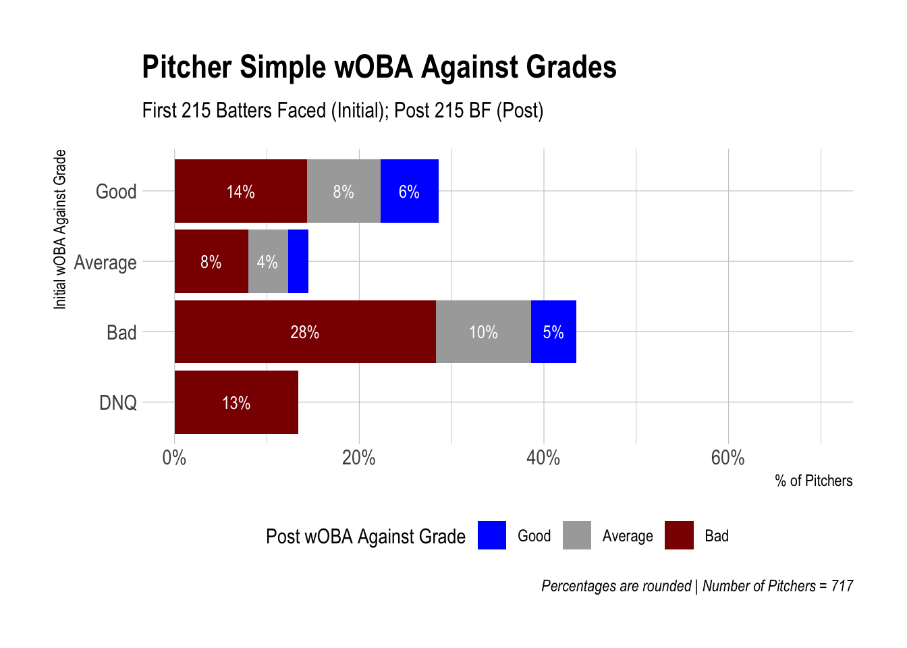
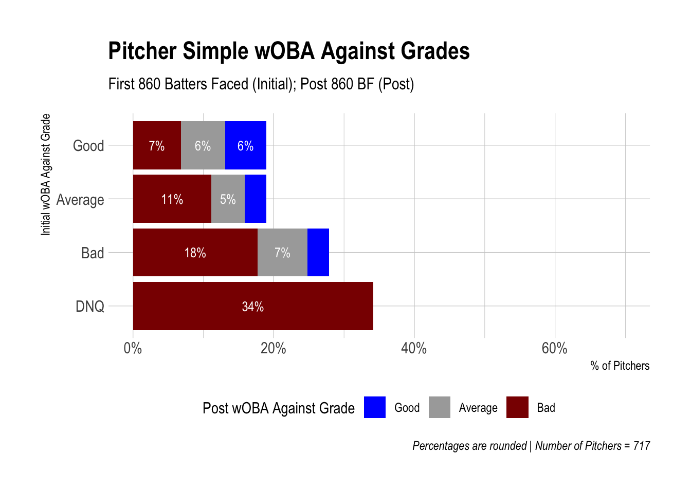

3 Simple wOBA Grades
3.1 Weighted On-Base Average (wOBA)
If you haven’t heard of Weighted On-Base Average (wOBA), I highly recommend you read FanGraphs’ primer. Credit is due to Tom Tango, the creator of the statistic, who we will come back to later.
I won’t rehash too many details, but my key takeaway is that wOBA is a comprehensive offensive statistic which more accurately quantifies the value of a batter’s performance compared to other traditional statistics. Batting Average (BA), On-Base Percentage (OBP), Slugging Percentage (SLG), On-Base + Slugging Percentage (OPS), can’t fully capture the nuance of a batter’s value like wOBA does. This is because wOBA measures the precise effect a walk, single, double, triple, home run, even hit-by-pitches (HBP) have on whether teams score a run or not and bakes that into the statistic.
FanGraphs includes some general guidelines to evaluating what a good or bad wOBA is for batters, included below. It’s essentially equivalent to a good or bad OBP since wOBA is always scaled to league average OBP. These rating groups and their corresponding values may fluctuate in small ways over long periods of time, but we will use these ratings—or grades as I refer to them—throughout this analysis. For our purposes, wOBA will serve as a catch-all statistic to measure player performance. Even though wOBA is an offensive statistic, we can measure batters’ wOBA against pitchers to evaluate pitchers and invert the grading scale.

3.2 Our Scale
I’ve converted these numbers to the following scale.
- Elite: .400 or above
- Great: .370 to .399
- Good: .340 to .369
- Average: .320 to .339
- Below Average: .310 to .319
- Poor: .291 to .309
- Awful: .290 or below
3.3 Additional wOBA Limitations
Because wOBA is an offensive statistic, there are limitations to using it to evaluate pitchers. This article lends great insight into that (also relevant for batters). Especially because we are looking at historical data—well before Statcast existed and Stuff+ models were created—our options for picking a stat for pitchers are limited. An issue with wOBA Against is that it betrays a concept important to advanced statistics like FIP (Fielding Independent Pitching). FIP isolates a pitcher’s performance from their defense behind them, which is considered out of their control.
This all may seem like a massive rabbit hole, but we’ll find ourselves below ground again at the very end, so it’s important to acknowledge the tunnels beneath us.
On a much simpler note, wOBA Against (or wOBA Allowed) has going for it that the top six pitchers from this dataset are Clayton Kershaw, Pedro Martinez, Chris Sale, Stephen Strasburg, Max Scherzer, and Justin Verlander. We shouldn’t overthink the fact that measuring how poorly batters perform against a pitcher over a long period of time is probably a relatively good indicator of how good the pitcher is. It’s not perfect, but it will suffice.
A second limitation is that wOBA is not directly equivalent with fantasy baseball value. While fantasy leagues almost always include batting stats like Runs, Home Runs, RBIs, Stolen Bases, and either Batting Average or On-Base Percentage, wOBA does not explicitly factor in three of these stats (Runs, RBI, and Stolen Bases). My understanding is that the principle of wOBA—and sabermetrics as a whole—is to more accurately isolate a player’s value from situations outside of their control. Additionally, over longer periods of time batters with good wOBAs should generally wind up in better spots in the batting order, and counting stats like Runs and RBIs should follow. On the contrary, a good or bad wOBA will likely have little bearing on whether a player steals bases or not. The value a player contributes in this fantasy category is not captured in this analysis.
3.4 Simple wOBA Grades
So with all of that as an asphyxiating appetizer, let’s simplify things as much as we can.
Here are two bar charts of batters to show the relationship between a batter’s initial performance in the big leagues and their remaining career performance.
Each bar represents the percentage of batters who started their career with a specific wOBA grade (Good, Average, Bad, or Did Not Qualify (DNQ)) as indicated on the Y axis. Each color within each bar represents the wOBA grade for that percentage of batters after their initial performance (150 or 600 plate appearances).
The wOBA grades you see are just a simplified version of the FanGraphs table above: Good includes Elite, Great, Above Average; Average (Average); and Bad (Below Average, Poor, Awful). Did Not Qualify (DNQ) captures “cup of coffee” players, meaning that they only were in the major leagues for a very short time—enough for a cup of coffee but nothing more. I’ve noted in the Data Details section below the thresholds a player failed to reach to be classified as Did Not Qualify in addition to other important details and reminders.
As an example of using the charts, start at the Y axis with Good, and then look to your right. As you can see for the 150 PA chart, about 17% (8% + 5% + 4%)—note that percentages are rounded—of all batters hit for a Good wOBA for their first 150 plate appearances. Looking at the colors however, we can see that of those 17% of batters, 8% of them had a Bad wOBA after that point for the rest of their career (or failed to reach minimum plate appearance thresholds), 5% had an Average wOBA, and just 4% of them continued to have a Good wOBA.
If you toggle from 150 PA to 600 PA, you can see what these percentages are at 600 plate appearances and after. Colors without a labeled percentage are less than 3.5%—too small to label properly.
3.5 Data Details
- Stats are from the 1990 season through 2020
- All batters and starting pitchers who debuted from 1990 through 2010 are included
- Non-starting pitchers are not included. Some pitchers were both starters and relievers during their career, so this criteria was used to define starters:
- If a pitcher’s average pitch count per game was greater than or equal to 70, STARTER
- If a pitcher’s average pitch count per game was less than or equal to 40, RELIEVER
- If a pitcher never started a game, RELIEVER
- If a pitcher’s average inning pitched in games was the fifth inning and 2 outs or higher, RELIEVER
- The number of batters in the analysis = 1,891 and number of pitchers = 717
- Pitchers batting (it used to be a thing!) have been removed from the batting statistics
- Batters pitching (it still is a thing!) have been removed from the pitching statistics
- Intentional walks and sacrifice bunts are by default excluded from wOBA, so Plate Appearances (PAs) and Batters Faced (BF) are only those that ended in a wOBA-producing event
- An Initial wOBA Grade of DNQ stands for Did Not Qualify, meaning a player did not reach the stated Plate Appearances or Batters Faced thresholds
- For example, a batter who only had 120 career plate appearances did not qualify for either the 150 or 600 PA thresholds
- There is also a DNQ threshold set for the Post wOBA Grade to avoid comparing a player who for example made 150 plate appearances and then only one more after
- For 150 Plate Appearances, batters who did not reach 600 PA received a DNQ post wOBA grade
- In the above charts, DNQ post wOBA grades are classified as Bad
- For 600 PA, 1800 PA
- For 215 Batters Faced (BF), 860 BF
- For 860 BF, 2580 BF
- For 150 Plate Appearances, batters who did not reach 600 PA received a DNQ post wOBA grade
- The Batters Faced threshold was chosen to equal roughly 50 innings pitched (215 BF) and 200 innings pitched (860 BF) as calculated by comparing the total number of innings pitched and batters faced for all pitchers from 1990 through 2020
- Prospect ranks are from Baseball America’s preseason Top 100 Prospects lists
- If a prospect was on a previous season’s top 100 list, did not debut in the major leagues that season, and then fell off the preseason list for the season in which they debuted, they are not included as a top 100 prospect
- If a prospect was not on the top 100 list when they debuted but were added to the following season’s preseason top 100 list before the player lost prospect eligibility, they are included as a top 100 prospect
3.6 Initial Observations
Did you notice anything interesting in the charts above? A couple observations stuck out to me.
- Nearly a third of batters did not even reach 150 PA and nearly half did not reach 600 PA. “Cup of coffee” players are aplenty.
- As I mentioned earlier, a batter who hit for a Good wOBA over their first 150 PA was more likely to have a Bad wOBA grade for the remainder of their career than Good.
- Remember that a grade of Did Not Qualify, meaning in this case that they didn’t reach 600 PA, falls under a Bad grade. So both regression and attrition are contributing to this.
While this is interesting at a macro-level, watch what happens when we look at groups of batters based on their prospect rank. Prospects are grouped by prospects who ranked 1 through 25, 26 through 50, 51 through 75, 75 through 100, and Unranked—labeled above each chart.
3.7 Batters by Prospect Rank
3.8 Importance of Prospect Pedigree
As you can see, there is a lot more blue when looking at ranked prospects compared to unranked prospects. Ranked prospects outperform unranked prospects. That should come as no surprise to anyone.
Percentages were left off these charts for sake of space and because we’ll look at these percentages in greater detail later.
It’s hugely important for us to acknowledge that the observations we made earlier when looking at all batters remain true only when looking at unranked prospects. You probably already sensed this, but a majority of batters are unranked prospects. They weight heavily in the chart that shows all batters together, making it hard to see the effect of top ranked prospects.
This underscores the importance of prospect pedigree in our analysis and the general principle of comparing subgroups of a dataset.
3.9 Prospect Ranks Limitations
An additional limitation specific to the prospect ranks data is that we have no subgroups for unranked prospects. Just as it would be unwise to look at all players together with no reference to their prospect rank, it is unfortunate that we have to do this for unranked prospects. Some of those unranked prospects would have been considered borderline top 100 prospects, whereas others miraculously made it to the major leagues and didn’t expect to stay for long. Keep that in mind as we discuss unranked prospects throughout the analysis. There is greater nuance that we can only infer.
3.10 Pitchers


3.11 Pitchers by Prospect Ranks
3.12 Additional Observations
My goal with these initial charts was more to orient you to wOBA, wOBA grades, and comparing initial and remaining career performance. This will be helpful as we look at more detailed wOBA grades and the corresponding percentages of players.
Some last things to mention for these charts:
- The pitcher charts look visually similar to the batter charts (further analysis will help us more easily compare them).
- We see similar differences in ranked prospects compared to unranked for both batters and pitchers, further emphasizing the importance of prospect pedigree.
- More players had an Average wOBA or wOBA Against grade at 600 PA or 860 BF compared to 150 PA or 215 BF, which suggests that more extreme outcomes become less likely over time.
- Top 25 prospects were pretty darn good. Look at all that blue!